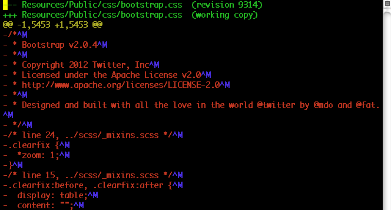

Have You Thought About It?
Michael Cannon
TYPO3 Vagabond
US, South Korea, Taiwan, India, Germany
PHP Fundamentals Refresher
the short version
The basics are just that, basic. As we grow with experience, we tend to forget them because they aren't cool anymore.
Let's Review…
- Simple Optimizations for PHP
- PHP's Language Reference
Simple Optimizations for PHP
- Unix Line Endings
- Variable Initialization
- Yoda Conditions
- Understand Operator Workings
- String Quoting
- Quoting Array Keys Correctly
emptyvs.issetemptyvs.countcountinforloopsechovs.print- Comment Out Code
Use Unix Line Endings

- Cross-platform friendly
- Consistent for all developers
- Prevent whitespace based erratic PHP errors
http://en.wikipedia.org/wiki/Newline
Variable Initialization
$array = array( 0, 1, 1, 2, 3, 5 );
$string = '';
foreach ( $array as $key => $value ) {
$string .= $key . ' ' . $value . ', ';
}
echo $string;
- Initialize your variables
$a = 1vs.$a++- Get expected results
- Avoid PHP Notice: Undefined variable
Yoda Conditions
$a = 1; if (1 = $a) // "Parse error: syntax error, unexpected '='' vs. if ($a = 1) // true; assigns $a and is possible logic error if (1 == $a) // true vs. if ($a == 1) // true
- Use Yoda Conditions
- Right side variable, left side constants or literals
- Prevents assignment
- Prevents logic errors
Understand Operator Workings
$a = 1; // a is an integer by context ($a = 1) // true; also assigning $a; possible logic error ($a == 1) // true ($a == '1') // true ($a === 1) // true ($a === '1') // false; '1' is a string, not integer like $a
- Assignment, equality, and identity are not the same
String Quoting
- Double-quote vs. single-quote AKA " vs. '
- Fastest to slowest shown below of 10,000 iterations
- Time in microseconds
- That's 1/1,000,000 of a second

Reality is… they're all really fast, a blink of the eye
String Quoting
function test_double_quote() {
return " hello ";
}
function test_single_quote() {
return ' hello ';
}
function test_single_quote_concatenated() {
return ' hello ' . ' world ';
}
function test_double_quote_concatenated() {
return " hello " . " world ";
}
function test_double_quote_concatenated_variable() {
$world = "world";
return " hello " . $world;
}
function test_single_quote_concatenated_variable() {
$world = 'world';
return ' hello ' . $world;
}
function test_double_quote_variable() {
$world = "world";
return " hello $world";
}
Double-quote vs. single-quote test functions
String Quoting – What's the point?
// ick, not bad, but not optimal
$string = "Me {$rhyme} $not {$so['good']}";
// good
$string = 'I like a bay ';
$string .= "On a sunny day ";
$string .= 'Watching a ' . $blue . ' jay ' . "Sitting on a " . $sun['ray'];
$fav_saying = sprintf( 'I %s %s', $love, $mentoring['developers'] );
- Pick " or ' for complete strings sans variables
- Use complete strings with " or ' and concatenate variables
- Don't use " with variables inside strings
- Use
sprintforprintfinstead
- Use
Quoting Array Keys Correctly
$array = array( 'three' => 'TYPO3' ); echo $array[ 'three' ]; // outputs TYPO3 echo $array[ three ]; // outputs TYPO3… // and gives PHP Notice: Use of undefined constant
- Always use quotes around a string literal array index
- Number keys don't need quotes
empty vs. isset
if ( ! empty( $arr[ 1 ] ) ) { … }
vs.
if ( isset( $arr[ 1 ] ) && count( $arr[ 1 ] ) ) { … }
if ( isset( $arr[ 1 ] ) && '' != $arr[ 1 ] ) { … }
if ( isset( $arr[ 1 ] ) && 0 < $arr[ 1 ] ) { … }
- Use
emptyvs.issetfor checking if item exists- Code is easier to write, read & maintain
emptyreturns FALSE if var has a non-empty and non-zero value, else TRUEissetreturns TRUE if var exists and has value other than NULL, else FALSE
http://php.net/manual/en/function.empty.php
http://php.net/manual/en/function.isset.php
http://php.net/manual/en/function.isset.php
empty vs. count
$arr = array();
if ( empty( $arr ) ) { … }
vs.
if ( 0 == count( $arr ) ) { … }
if ( 0 == sizeof( $arr ) ) { … }
- Use
emptyvs.countfor checking empty arrays - Code is easier to write, read & maintain
emptyworks with strings, integers, floats, NULL, boolean, arrays, and variables
http://php.net/manual/en/function.empty.php
http://php.net/manual/en/function.count.php
http://php.net/manual/en/function.count.php
count in for loops
$array = array(1, 2, 3, 4);
// slow because of count on each iteration
for ( $i = 0; $i < count($array); $i++ ) { echo $i; }
// instead, do this
$count = count($array);
for ( $i = 0; $i < $count; $i++ ) { echo $i; }
// or this
for ( $i = 0, $count = count($array); $i < $count; $i++ ) { echo $i; }
- Calculate
countbeforeforloops - Performance matters – expr2 always executes
forwithcount– 6.2 times slower
echo vs. print
echo 'hello'; print 'hello'; echo( 'hello' ); print( 'hello' ); echo 'foo is ' . $foo; print 'foo is ' . $foo;
echoandprintare language contructs- They're…
- Not functions, normally used without parentheses
- Essentially interchangeable — just use
echoechoreturns NULLprintreturns 1 – Useful for file writing
http://php.net/manual/en/function.echo.php
http://php.net/manual/en/function.print.php
http://php.net/manual/en/function.print.php
Comment Out Code
echo 'hello';
if ( FALSE ) {
echo ' cold,';
echo ' cruel';
… // long convoluted stuff
}
echo ' world';
echo 'hello';
// echo ' cold,';
// echo ' cruel';
// … // long convoluted stuff
echo ' world';
- Use
ifcontrol structure to comment out code chunks- Easier to control and know what to remove later on
Understanding PHP's fundamentals helps you make better choices
PHP's Language Reference
- Basic Syntax
- Variables
- (Variable) Types
- Constants
- Operators
- Control Structures
- Functions
- Predefined Variables
http://php.net/manual/en/langref.php
Basic Syntax
<?php /* a multi line comment of wonderous descriptions */ // awesome PHP code below echo 'awesome'; # always close php ?> HTMLgoeshere <?php // more php… ?>
- Always…
- open PHP code using
<?php - close PHP code using
?>
- open PHP code using
- Everything outside
<?php&?>is ignored by PHP - Separate PHP instructions with
;or?> - Write useful comments
http://php.net/manual/en/language.basic-syntax.php
Variables
$var = 'Bob'; $Var = 'Joe'; echo $var . ', ' . $Var; // outputs 'Bob, Joe' $var_2 = &$var; $var_2 .= ' Jones'; echo $var; // outputs 'Bob Jones' echo $var_2; // outputs 'Bob Jones'
- Format:
$[_a-zA-Z][_a-zA-Z0-9]+ &– assign by reference AKA point to this
http://php.net/manual/en/language.variables.basics.php
Variable Scope
$a = 1; // global scope
include 'b.php';
// b.php contents
<?php
function test() {
echo $a; // references local scope variable, but doesn't exist
// PHP Notice: Undefined variable
}
test(); // no output
function testb() {
global $a;
echo $a; // reference to global scope variable
}
testb(); // outputs 1
?>
- A variable is accessible within the context it is defined
- Scope spans included and required files
http://php.net/manual/en/language.variables.scope.php
(Variable) Types
- Scalar
- Booleans – only true or false
- Integers – only positive or negative whole numbers
- Floating point numbers – all other positive or negative numbers
- Strings – parsed or unparsed series of characters
- Compound
- Arrays – simple, associative, or multi-dimensional
- Objects – another presentation
- Special
- Resources – point to external resources: files & database connections
- NULL – Represents a variable with no value
- Pseudo-types
- Mixed – accepts scalar and compound types
- Number – either integer or float
- Type Juggling
http://php.net/manual/en/language.types.php
Type Juggling
"42" // is a string 42 // is an integer 42 + "28 days" // is an integer, because of string math true // is a boolean "true" // is a string
PHP does not support type definition… type is determined by context…
http://php.net/manual/en/language.types.type-juggling.php
Parsed Strings
echo "\n"; // outputs newline whitespace character
echo "\"\$x\""; // outputs "$x"
echo "$x"; // outputs value of x
echo "$x[1]"; // outputs value of x[1]
echo "{$x['date']}"; // outputs value of x['date']
echo "{$obj->month[12]->name}"; // outputs December
echo "{\$x['date']}"; // outputs {$x['date']}
$str = <<<EOD
Example of "string" spanning\n {$multiple} lines
using 'heredoc' syntax.
EOD;
- Double quoted
"or heredoc syntax<<<EOD&EOD; - Interprets special characters
- Variables are expanded – within {} first
Unparsed Strings
echo ''; // outputs empty string echo '\n'; // outputs \n echo '\'\$x\''; // outputs '\$x' echo '$x'; // outputs $x echo '''; // outputs PHP Parse error: syntax error, unexpected T_CONSTANT_ENCAPSED_STRING
- Single quoted
'(simplest) - Does not interpret special characters
- Variables are not expanded
http://php.net/manual/en/language.types.string.php
Simple & Associative Arrays
$array = array( 'I', 'am', 'TYPO', 3, ); $array = [ 'are', 'you?' ]; // PHP 5.4 array shorthand $array = array( 19 => 72, 'foo' => 'bar', 'bar' => 'foo', ); $array = array( $key1 => $value1, $key2 => $value2 );
- Comma-separated variables or key => value pairs
- Comma after last array element is optional
- Key identifiers are integer, string or constant types
- No key given? Starting at 0, last integer++ key applied automatically
http://php.net/manual/en/language.types.array.php
Multi-dimensional Arrays
$array = array( 'fruits' => array ( 'a' => 'apple', 'b' => 'banana', ), 'numbers' => array ( 1, 2, 3, 4, 5, 6 ), 'holes' => array ( 'first', 5 => 'second', 'third' ), ); echo $array['fruits']['a']; // outputs apple echo $array['numbers'][2]; // outputs 3 echo $array['holes'][5]; // outputs second unset( $array['holes'][0] ); // removes value 'first' $array['apple']['green'] = 'good'; // new multi-dimensional array
- A simple or associative array of arrays
http://php.net/manual/en/language.types.array.php
Constants
define( 'FOO', 'something, ' ); define( '_FOO_2_BAR', 'something different, ' ); const FOO_BAR = 3.1415967; // PHP 5.3.0 echo FOO . _FOO_2_BAR . FOO_BAR; // outputs something, something different, 3.1415967
- Identifier for a static scalar – boolean, integer, float or string
- Format:
$[_A-Z][_A-Z0-9]+ - Value cannot change
- Ignores scope
- Should be declared before usage
- PHP Notice: Use of undefined constant TBD
http://php.net/manual/en/language.constants.php
Magical (Predefined) Constants
// debug helpers: where are you in script execution? echo __LINE__ . ':' . basename( __FILE__ ) . '<br />'; t3lib_div::devLog( true, __FUNCTION__, 0, false );
| Name | Description |
|---|---|
__LINE__ |
The current line number of the file. |
__FILE__ |
The full path and filename of the file. |
__DIR__ |
The directory of the file. Like dirname(__FILE__). |
__FUNCTION__ |
The function (or class method) name. |
http://php.net/manual/en/language.constants.predefined.php
Operators
$a = 1; // assigment -$a // arithmetic $a == $b // comparison $a++ // incrementing $a && $b // logical $a . $b // string $a + $b // array
- Takes 1 or more expressions and yield a value
http://php.net/manual/en/language.operators.php
Assignment Operators
| Example | Gets… | Result |
|---|---|---|
$a = 1 |
Set to | 1 |
$a *= -1 |
Negated | Opposite of $a |
$a += $b |
Added to | Sum of $a and $b |
$a -= $b |
Subtracted from | Difference of $a and $b |
$a *= $b |
Multiplied by | Product of $a and $b |
$a /= $b |
Divided by | Quotient of $a and $b |
$a %= $b |
Mod'd by | Remainder of $a divided by $b |
- Assign left operand to value of right expression
http://php.net/manual/en/language.operators.assignment.php
Comparison Operators
| Example | Name | Result |
|---|---|---|
$a == $b |
Equal (Equality) | TRUE if $a is equal to $b after type juggling |
$a === $b |
Identical (Identity) |
TRUE if $a is equal to $b and of same type |
$a != $b |
Not equal | TRUE if $a is not equal to $b after type juggling |
$a <> $b |
Not equal | TRUE if $a is not equal to $b after type juggling |
$a !== $b |
Not identical |
TRUE if $a is not equal to $b or not of same type |
$a < $b |
Less than | TRUE if $a is strictly less than $b |
$a > $b |
Greater than | TRUE if $a is strictly greater than $b |
$a <= $b |
Less than or equal to | TRUE if $a is less than or equal to $b |
$a >= $b |
Greater than or equal to | TRUE if $a is greater than or equal to $b |
http://php.net/manual/en/language.operators.comparison.php
http://php.net/manual/en/types.comparisons.php
http://php.net/manual/en/types.comparisons.php
Incrementing/Decrementing Operators
| Example | Name | Effect |
|---|---|---|
++$a |
Pre-increment | Increments $a by one, then returns $a |
$a++ |
Post-increment | Returns $a, then increments $a by one |
--$a |
Pre-decrement | Decrements $a by one, then returns $a |
$a-- |
Post-decrement | Returns $a, then decrements $a by one |
- Doesn't affect booleans
- Decrementing NULL has no effect
- Incrementing NULL results in 1
http://php.net/manual/en/language.operators.string.php
Logical Operators
| Example | Name | Result |
|---|---|---|
! $a |
Not | TRUE if $a is not TRUE |
$a && $b |
And | TRUE if both $a and $b are TRUE |
$a || $b |
Or | TRUE if either $a or $b is TRUE |
$a and $b |
And | TRUE if both $a and $b are TRUE |
$a xor $b |
Xor | TRUE if either $a or $b is TRUE, but not both |
$a or $b |
Or | TRUE if either $a or $b is TRUE |
- Operators are listed in order of precedence
http://php.net/manual/en/language.operators.logical.php
http://php.net/manual/en/language.operators.precedence.php
http://php.net/manual/en/language.operators.precedence.php
String Operators
| Example | Name | Result |
|---|---|---|
$a . $b |
Concatenation | $a$b |
$a .= ' ' . $b |
Concatenating assignment | $a $b |
- Used to join strings together
http://php.net/manual/en/language.operators.string.php
Control Structures
if,elseif,else if,elseswitch- loops
whileforforeach
require,include,require_once,include_once
http://php.net/manual/en/language.control-structures.php
if, elseif, else if, else
if ( expression ) {
…
} elseif ( expression ) {
…
} else {
…
}
if,elseif,else if- Executes when expression evaluates to Boolean TRUE
else- Executes when prior
if&elseifevaluate to FALSE
- Executes when prior
http://www.php.net/manual/en/control-structures.if.php
switch
switch ($i) {
case 0:
echo 'i equals 0';
break;
case 1:
case 2:
echo 'i equals ' . $i;
break;
default:
echo 'i is not equal to 0, 1 or 2';
break;
}
case– condition to matchbreak– stop case executiondefault– default condition when no others match- Useful in place of
if(1=$a), elseif(2=$a), elseif(3=$a)…
http://www.php.net/manual/en/control-structures.switch.php
while
$i = 1;
while ($i <= 10) {
// the printed value would be $i before the increment
echo $i++;
}
- Simplest PHP loop
- Executes when expression evaluates to Boolean TRUE
- Doesn't execute if expression is FALSE
http://www.php.net/manual/en/control-structures.while.php
for
for (expr1; expr2; expr3) { statement }
for ($i = 1; $i <= 10; $i++) { echo $i; }
- PHP's most complex loop
- expr1 always evaluated once at loop beginning
- On each iteration, expr2 is evaluated
- If expr2 is TRUE, then loop continues
- If expr2 is FALSE, then loop ends
- After each iteration, expr3 is executed
http://www.php.net/manual/en/control-structures.for.php
foreach
foreach (array_expression as $value) { statement }
foreach (array_expression as $key => $value) { statement }
- Easy way to iterate over arrays and objects
- Don't call
reset( array_expression )before using - Recommendation –
unset( $key, $value )when done
http://www.php.net/manual/en/control-structures.foreach.php
require, include, require_once, include_once
include 'vars.php';
include_once 'db.php';
require('http://www.example.com/file.php?foo=1');
require_once 'http://www.example.com/file.txt?bar=2'; // doesn't work, not PHP
- Evaluates given file using absolute, relative & URL paths
- No path? Checks include_path, script & current directory for file
- Use
returnin given file to terminate processing early - Use
require_onceorinclude_onceto prevent PHP Fatal error: Cannot redeclare - File not found?
require,require_once– gives PHP Fatal error: Failed opening requiredinclude,include_once– gives PHP Warning: failed to open stream
http://www.php.net/manual/en/function.include.php
Functions
function makecoffee( $types = array('cappuccino'), $coffeeMaker = NULL ) {
$device = is_null($coffeeMaker) ? 'hands' : $coffeeMaker;
return 'Making a cup of '.join(', ', $types).' with $device.\n';
}
echo makecoffee();
echo makecoffee( array('americano') );
echo makecoffee( array('cappuccino', 'lavazza'), 'teapot' );
$func = 'makecoffee';
$str = $func( array('machiato') );
echo $str;
- Accept…
- Any valid PHP code
- Other functions and class definitions
- Variable-length argument list
- If return is omitted, NULL is returned
- Variable functions…
http://php.net/functions
Predefined Variables
- Superglobals – built-in, always available variables
$GLOBALS— References all global scope variables$_SERVER— Server and execution environment information$_GET— HTTP GET variables$_POST— HTTP POST variables$_FILES— HTTP File Upload variables$_COOKIE— HTTP Cookies$_SESSION— Session variables$_REQUEST— HTTP Request (GET, POST & COOKIE) variables$_ENV— Environment variables
http://php.net/manual/en/reserved.variables.php
Deep… Language Reference is… to say… That's it
Comments? Questions?
Ask, speak up, mumble aloud
Thank you!
Michael Cannon
TYPO3 Vagabond
michael.cannon@in2code.de